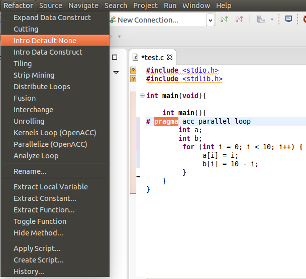
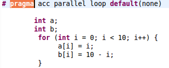

Description: Adds a default(none) clause to a parallel, parallel loop, kernels, or kernels loop construct.
Example:
- 1. Select the desired pragma to be changed and choose Intro Default None under the Refactoring menu.

- 2. The resulting pragma.

Use:
Restrictions:
- 1.Loop should not already have a default(none) clause.